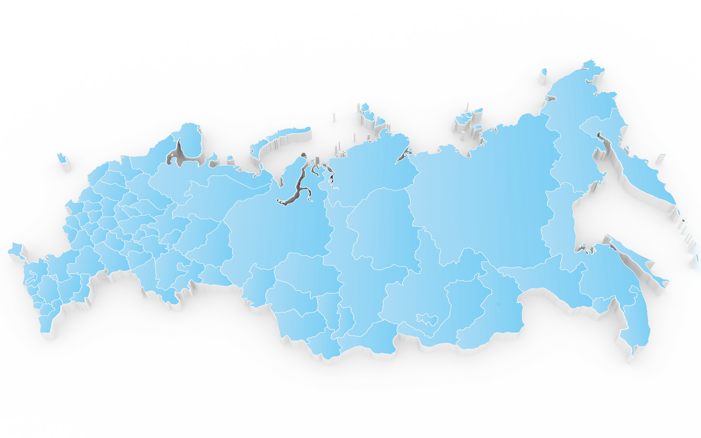

По статистике, всего 32% семей могут поехать отдохнуть все вместе. Часто детей на отдых сопровождает только мать или отец, иногда бабушка, дедушка или другие родственники. Порой ребенок едет с сопровождающими: на спортивные сборы, в детский лагерь и т.п. Чтобы при пересечении границы не возникло проблем, важно знать правила выезда ребенка за рубеж, которые за последние годы несколько изменились.
По законам Российской Федерации, если несовершеннолетний гражданин (лицо, не достигшее 18-летнего возраста — ред.) выезжает из страны вместе с хотя бы одним из родителей, усыновителей, опекунов или попечителей — согласия на выезд ребенка за границу от второго родителя не требуется. Важно не забывать, однако, что речь идет только о выезде ребенка из Российской Федерации, а не о въезде в другую страну.
Есть два вида согласий: есть согласие родителей на выезд ребенка, которое предназначается для предъявления сотрудникам пограничной службы Российской Федерации, оно должно оформляться строго в соответствии с федеральным законом о порядке выезда из РФ и въезда в РФ; второй вид - согласия, которые требуют консульские учреждения и посольства для оформления визы ребенка. Как будет оформляться согласие для получения визы, регламентируется законодательством той страны, куда оно будет предъявляться.
У каждой страны свои правила и законы, касающиеся детей. В большинство стран Шенгенского соглашения без согласия от второго родители ребенка не впустят, даже если он едет с другим родителем. В некоторых странах, например, во Франции, согласие требуется от обоих родителей в любом случае, даже если ребенок едет за границу с одним из них. Впрочем, иногда можно обойтись согласием одного из родителей, если второй родитель не принимает участия в воспитании ребёнка и его местонахождение неизвестно. В этих случаях вы должны иметь при себе подтверждающие данные факты документы. Поэтому, готовясь отправиться в поездку, уточните в консульстве или посольстве правила получения визы той страны, куда вы собрались въезжать. Ведь их незнание может стать причиной отказа вам и вашему ребенку в визе. Причем о причинах отказа в визовом центре, обычно, не сообщают, и вы не узнаете, что такая «мелочь» сорвала отпуск.
Чаще всего вопросом о согласии задаются разведенные родители, один из которых собирается выехать вместе с ребенком за границу, либо если ребенок путешествует один. Как сообщают в Пограничной службе ФСБ России, при путешествии ребенка за границу без сопровождения родителей, по российскому законодательству для выезда он должен иметь при себе кроме паспорта нотариально оформленное согласие от одного из родителей или опекунов на выезд с указанием срока выезда и государства, которое он намерен посетить. Согласие от второго родителя не нужно. Срок действия нотариального согласия определяется календарной датой или истечением периода времени, который исчисляется годами, месяцами, днями и т. п. Также в согласии срок может быть определён указанием на событие, которое должно обязательно наступить. Например, достижение совершеннолетия, окончание срока действия паспорта или визы и так далее.
Формулировка в согласии «до окончания срока действия паспорта» нежелательна, а без указания данных паспорта вовсе недопустима, так как создаёт невозможность проверки соблюдения срока выезда на границе. Лучше всего указывать конкретную календарную дату. Например, если срок действия заграничного паспорта ребенка истекает 1 января 2016 года, укажите в согласии «до первого января две тысячи шестнадцатого года». В согласии нужно указать также конкретные страны, в которые ребенок может выехать. Общие, списочные формулировки, такие как «страны Шенгена», «страны Юго-Восточной Азии» и т.п. недопустимы.
Если второй родитель не согласен с тем, что его ребенок может выехать за границу России, он может заявить о своем несогласии в миграционную службу.
Данные несовершеннолетнего получат пограничники, и тому будет временно ограничен выезд из России. В этом случае вопрос о возможности выезда решается только в суде.
Многие страны, если ребенок собирается пересечь границу без сопровождения родителей, с третьими лицами, требуют согласие обоих родителей. В основном, это европейские страны. В случае отсутствия такового вашего сына или дочь попросту развернут на границе.
Однако есть ряд стран, для въезда в которые ребенку достаточно свидетельства о рождении, а также согласие одного родителя, если он путешествует с сопровождающими. Так, в Казахстан, Беларусь, Киргизию, Абхазию, Южную Осетию и Украину дети до 14 лет могут въезжать по свидетельству о рождении с вкладышем или отметкой о гражданстве России.
При получения согласия на выезд на руки обязательно обратите внимание на то, чтобы все данные: ваши, второго родителя и несовершеннолетнего были указаны верно, проверьте правильность дат и перечень стран. Срок, указанный в согласии, должен соответствовать вашему волеизъявлению и, конечно, в первую очередь интересам ребенка.
Еще один вопрос, который часто волнует граждан, и его задают пограничникам: может ли ребенок выезжать, если сведения о нем внесены в биометрические паспорта родителей. Такая отметка не дает права ребенку на выезд за пределы России без своего паспорта. Зато, если ребенок едет с родителем, у которого он вписан в паспорт старого образца, то ему свой отдельный паспорт не требуется.